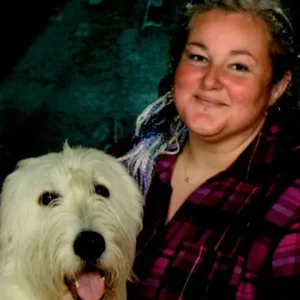
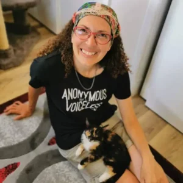
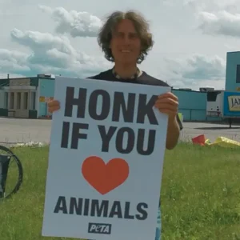
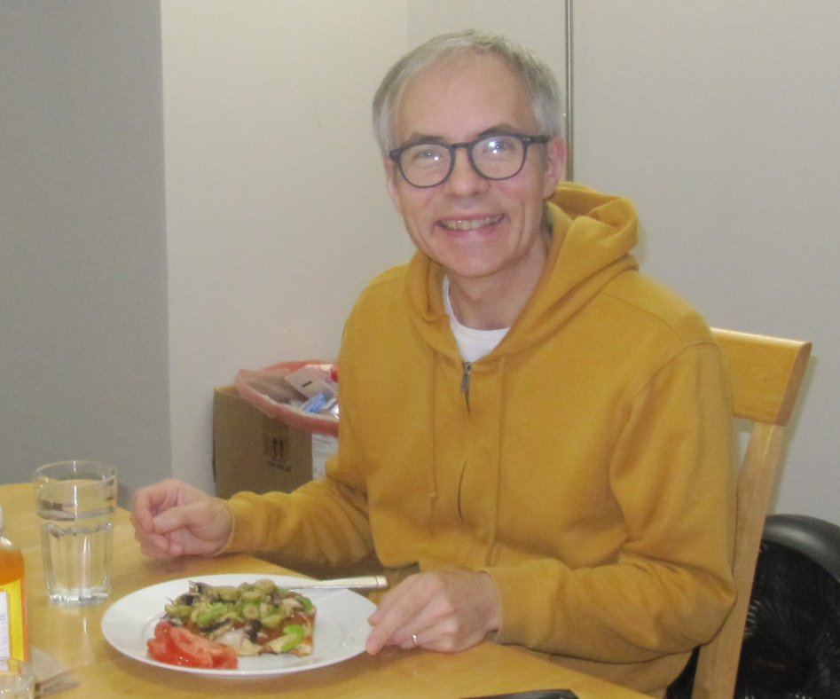

Meet the dedicated team behind the VVoA organization and discover the passion, expertise, and diverse backgrounds of each team member. From healthcare professionals to animal rights activists, the VVoA team brings a wide range of experience and knowledge to their work, united by a shared commitment to promote plant-based living and supporting those interested in veganism and vegetarianism.
Learn more about each member below to better understand the goals and values of the organization, and to get inspired to get involved and make a positive impact in your community.

President
A bit about me. I switched to veg from a young age while living in a small town in Newfoundland so I had to forge my own way. I plan to eventually open my own vegan cafe back home to share just how good vegan food can be, but in the meantime I’m happy to give my best support to the vegan community in Alberta.

Vice President
Animal activist and event coordinator who plans and executes VVOA events, markets, and festivals. Building a compassionate plant-based community through advocacy, education, meaningful events and great food!

Tabling & Membership Coordinator
Marc Biollo has been part of the VVOA family for over eight years and is the son of a cattle farmer who made a powerful shift to veganism.
Marc brings compassion, lived experience, and a down-to-earth approach to everything he does.

Treasurer
Vegan since 2016 and still have hundreds of recipes in my queue yet to try!
Tech Operations
Young enthusiast to raising awareness about the health and environmental benefits of plant-based diets.